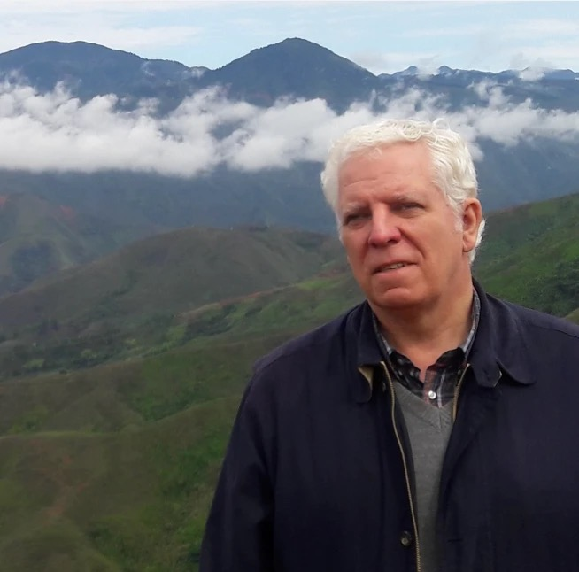
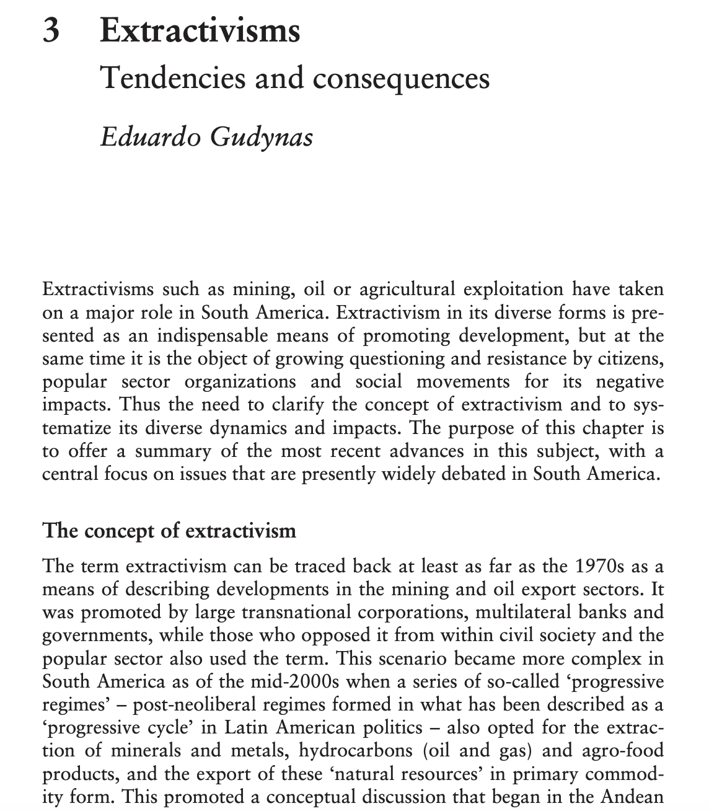
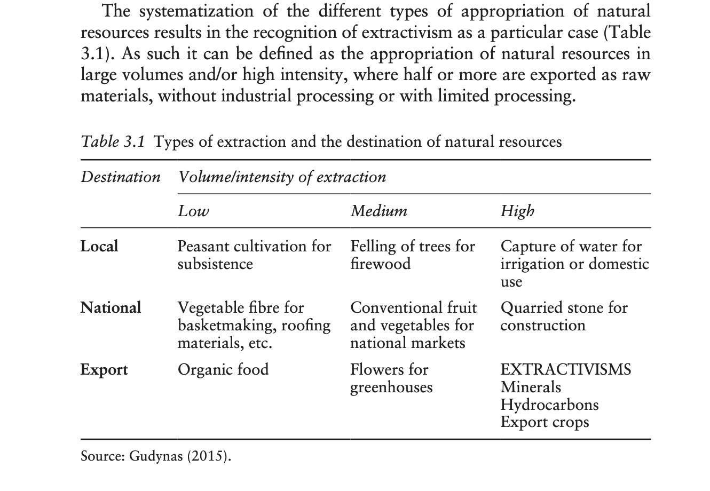
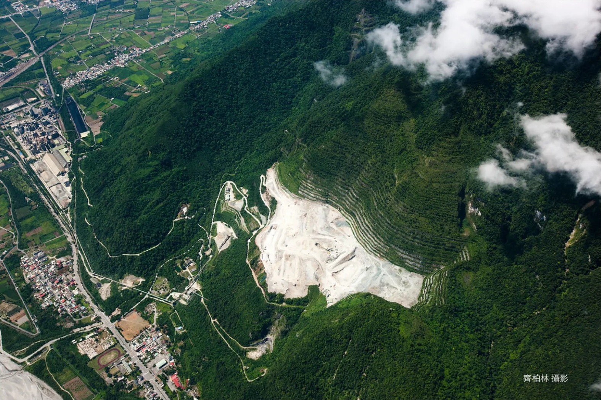

GLOBAL DEVELOPMENT · MONDAY, NOVEMBER 23
Extractivism
Based on Henry Veltmeyer, “Extractivism,” chapter 17 in The Routledge Handbook of Global Development (2022)
Eduardo Gudynas, “Extractivisms: Tendencies and Consequences,” in Reframing Latin American Development (2018)
Time: about 1 minute.
Good afternoon. My talk is about extractivism, and it asks one question: does extractivism need exports? I start from Eduardo Gudynas’s strict definition, which counts only extraction that is large in volume or intensity and mostly exported as raw materials. I present a 2026 case from Peru. Then I test his definition on a case from my own country: a cement mine in Hualien, Taiwan, in 2017. The puzzle: if Peru and Hualien face similar harms, why does the definition depend on exports?
The talk is based on the course reading, Henry Veltmeyer’s chapter “Extractivism” (2022), and on Gudynas’s chapter.
References: Veltmeyer, H. (2022) “Extractivism,” chapter 17 in Sims, K. et al. (eds) The Routledge Handbook of Global Development. Abingdon: Routledge, pp. 197–206. Gudynas, E. (2018) “Extractivisms: Tendencies and Consequences,” chapter 3 in Munck, R. and Delgado Wise, R. (eds) Reframing Latin American Development. Abingdon: Routledge, pp. 61–76.
INTRODUCTION
Introduction: why this definition matters
Two mountains, two continents, one question.
Hook (accroche)
Taiwan, 2017: thousands march against a cement mine near Taroko.
Peru, 2026: concessions overlap the home of isolated Indigenous peoples.
Local people bear the harm in both.
Context (contexte)
Extractivism is a major issue in South America.
Eduardo Gudynas is one of its main analysts.
He defines it narrowly, and by exports.
Definition
Large-volume or high-intensity extraction of natural resources.
Half or more exported as raw materials.
Extraction for the home market is not extractivism.
Whether each case counts depends on the definition .
Time: about 1 minute.
Hook: two mountains on two continents. In June 2017, thousands marched in Taiwan against a cement company’s mine near Taroko, after the government extended its mining right for twenty years. In May 2026, a report on Peru found oil, gas, mining, and logging concessions overlapping the Yavarí-Tapiche corridor, home to Indigenous peoples in isolation. Local people bear the harm in both places. But whether each counts as extractivism depends on the definition.
Context: extractivism has taken on a major role in South America, and Eduardo Gudynas is one of its main analysts. He defines extractivism narrowly, and by exports.
Definitions: extractivism, in Gudynas’s sense, is the removal of large quantities of natural resources, or removal at high intensity, where half or more leaves the country as raw materials. By contrast, extraction for the domestic market is not extractivism in his sense.
Next, the central question and the plan.
INTRODUCTION · PLAN
Central question and plan (annonce du plan)
CENTRAL QUESTION (PROBLÉMATIQUE)
Why does Gudynas define extractivism by exports, and what does that leave out?
I. Definition and its setting
A. What counts as extractivism?B. A 2026 case from Peru II. Testing the definition
A. The economists’ frame and Taiwan’s Hualien mineB. Peru and Hualien compared: the puzzle
Time: about 1 minute.
Central question, the problématique: why does Gudynas define extractivism by exports, and what does that leave out?
Plan, the annonce du plan. Part I presents Gudynas’s definition and its setting. In I.A, I use his Table 3.1 to show what counts as extractivism. In I.B, I present a 2026 case from Peru. Part II tests the definition. In II.A, I first ask why economists and Gudynas do not seem to talk to each other, then present a case from my own country, the Hualien mine in Taiwan. In II.B, I compare it with Peru and come back to the puzzle.
French terms used in this talk: accroche (hook), problématique (central question), annonce du plan (announcement of the plan), partie and sous-partie (part and sub-part), transition, bilan (summary and assessment), and ouverture (opening).
I.A · THE AUTHOR
Eduardo Gudynas
Who is the author of the definition?

Profile
Eduardo Gudynas Silinskas, born 1960 in Montevideo.
Uruguayan biologist and author specializing in environmental issues.
Member of the Latin American Center for Social Ecology (CLAES).
Time: about 1 minute.
Before the definition, a word on its author. Eduardo Gudynas Silinskas was born in 1960 in Montevideo. He is a Uruguayan biologist and author who specializes in environmental issues. He is a member of the Latin American Center for Social Ecology, known by its Spanish acronym CLAES. This profile comes from his Wikipedia page, so it is brief; I do not claim more about his career here. The photo comes from his own website, gudynas.com.
Transition: now his definition of extractivism, in the chapter I use.
I.A · THE SOURCE
The source: Gudynas, chapter 3 (2018)
What is this chapter, and what does it set out to do?

What the chapter sets out to do
Clarify the concept of extractivism and systematize its dynamics and impacts.
The term dates back at least to the 1970s, in the mining and oil export sectors.
The definition appears on page 62, in Table 3.1.
Gudynas 2018, chapter 3 in Reframing Latin American Development , edited by Ronaldo Munck and Raúl Delgado Wise (Routledge), 61–76.
Time: about 1.5 minutes.
Before the definition, the source. This is the opening page of chapter 3 in Eduardo Gudynas’s 2018 text, “Extractivisms: Tendencies and Consequences,” published in Reframing Latin American Development, edited by Ronaldo Munck and Raúl Delgado Wise (Routledge, 2018), pages 61 to 76.
The chapter opens by saying that extractivisms such as mining, oil, or agricultural exploitation have taken on a major role in South America. They are presented as indispensable for development, but they are also the object of growing questioning and resistance by citizens, popular organizations, and social movements because of their negative impacts. Hence the purpose of the chapter: to clarify the concept of extractivism and to systematize its dynamics and impacts, summarizing recent advances on issues that are widely debated in South America.
One point from the first page matters for my talk: the history of the term. It can be traced back at least to the 1970s, as a way of describing developments in the mining and oil export sectors, and it was promoted by transnational corporations, multilateral banks, and governments, while opponents in civil society also used it. The definition comes next, on page 62, in Table 3.1.
Transition: the chapter asks for a rigorous definition, so let me show it.
I.A · GUDYNAS’S DEFINITION
Gudynas: what counts as extractivism?
Which extraction counts as extractivism, and which does not?

Reading the table
Only the high-volume, export cell is extractivism.
Quarried stone for construction is national, so it is not.
Half or more must be exported as raw materials, with little or no processing.
Time: about 2.5 minutes.
This slide shows the page from Gudynas’s 2018 chapter, from the book Reframing Latin American Development (Routledge, 2018), with his definition above Table 3.1. Its source is Gudynas (2015). It classifies the appropriation of natural resources along two dimensions: the destination of the resource, local, national, or export, and the volume or intensity of extraction, low, medium, or high.
Read the rows. Local destination: peasant cultivation for subsistence, felling trees for firewood, and capture of water for irrigation or domestic use. National destination: vegetable fibre for basketmaking and roofing, conventional fruit and vegetables for national markets, and quarried stone for construction. Export destination: organic food at low intensity, flowers for greenhouses at medium intensity, and in the high-volume cell, the extractivisms: minerals, hydrocarbons, and export crops. Only that one cell is called extractivism.
In words: extractivism is the appropriation of natural resources in large volumes or at high intensity, where half or more is exported as raw materials, without industrial processing or with limited processing (2018, 62). The 50 percent threshold is a working criterion (63). Volume can be measured in tonnes, including an “ecological backpack”: for every tonne of copper exported, a country moves on average 348 tonnes of rock, soil, and other materials. Intensity refers to effects such as ecotoxicity, as with mercury and cyanide in alluvial gold mining.
Note what falls outside. Other cells include high-impact activities, such as quarrying stone for construction, that are not extractivisms because they are not exported. Gudynas says we should not exaggerate the term, since a diffuse term loses its analytical value (63). He also says extractivisms are local, but tied to globalization because they are the first link in international marketing and production chains (63). Keep this in mind: it is the key to my puzzle.
Transition to I.B: that is the definition. Now a recent case from Peru that I want to test against it.
I.B · A 2026 CASE FROM PERU
A 2026 case from Peru: Yavarí-Tapiche
What does a 2026 report show, and what does it leave unsaid?
What the report found
Yavarí-Tapiche corridor: over 16 million hectares, home to isolated peoples.
Oil and gas blocks overlap 1.7 million hectares, about 10% of it.
13 mining concessions, timber on 500,000 hectares, and new roads.
What it does not say
Where the oil, minerals, or timber go: no export data.
Which companies hold the concessions: none named.
Whether communities were consulted: not mentioned.
Concessions press on Indigenous land, but the export test cannot be applied from this text.
Time: about 2.5 minutes.
A 2026 case from Peru. I use a Mongabay Latam report by Yvette Sierra Praeli, republished by Servindi on 12 May 2026, based on a study by Earth Insight with Indigenous organizations, published on 6 May 2026. It concerns the Yavarí-Tapiche territorial corridor on the Peru–Brazil border, more than 16 million hectares, the largest concentration of Indigenous peoples in isolation and initial contact in the Amazon. Oil and gas blocks overlap 1.7 million hectares, about 10 percent of the corridor, including 537,000 hectares inside territories of isolated peoples. Thirteen mining concessions overlap the corridor, and timber concessions cover 500,000 hectares on the Peruvian side. Roads are the other pressure: for every kilometer of legal road, about three kilometers of illegal road branch off, and two highway projects are named.
What the report does not say. It names no companies and gives no government statement. It does not say where oil, minerals, or timber go, so the export test cannot be applied from this text alone. It does not mention prior consultation. And the figures are the study’s own, not checked against government registries.
Link to Gudynas. In his 2018 chapter, he reported that oil blocks covered about 75 percent of the Peruvian Amazon region in 2013 (67–68), and that mining concessions covered 21 percent of Peru’s land (67). So the pressure documented in 2026 continues a pattern he already described. Oil, gas, and minerals are typical export commodities, which is why this case probably fits his definition, but the report itself gives no export data.
Bilan of Part I and transition: Gudynas’s definition is strict and built on exports. In Part II I test it, starting with a case from my own country.
II.A · THE ECONOMISTS’ FRAME
Economists and Gudynas: a missing dialogue
I found no dialogue between Gudynas and Duflo, Aghion, or Acemoglu. Why?
An externality frame
Transaction: a mining company sells to a downstream customer.
Harm: local residents bear costs that neither side pays.
Standard tools: a tax, regulation, or bargaining over rights.
Why no dialogue? (conjectures)
Economists already analyze this with externalities, exports or not.
A Pigouvian tax balances private benefits and public costs.
So a second framework, extractivism, adds little for them.
For economists, the externality frame already covers the issue ; Gudynas’s frame adds little.
Time: about 2.5 minutes.
I looked for research in which Gudynas and development economists such as Esther Duflo, Philippe Aghion, or Daron Acemoglu discuss extractivism, and I found none. This is my own search, not an exhaustive review, so I treat it as a starting observation. Why?
Conjecture one, my main one: economists already use externalities as their framework for this problem, so they have no reason to adopt another framework such as Gudynas’s extractivism. The standard measure, a Pigouvian tax, strikes a balance between the private benefits of the mine and the public costs it imposes. Here is the logic. Mining is a transaction between a mining company and its downstream customer. Local residents are not part of that transaction, but they are harmed by it: dust, landslide risk, loss of land. A cost imposed on a third party that neither side pays is a negative externality. Economics has standard answers: a Pigouvian tax, regulation, or bargaining over property rights, as in Coase. From this view there is no need for a special concept like extractivism, and the harm is the same whether the product is exported or not.
Conjecture two, secondary and from Gudynas’s own texts, so it explains why he does not engage them either: he distrusts the main tool of the externality approach, which is pricing the harm. He says compensation promotes the logic “I contaminate you, but I pay you,” which reinforces the commodification of nature and shrinks justice (2018, 72). He also argues that valuations are plural and incommensurable, and that nature has intrinsic values (2017, 2). If values cannot be compared in money, then internalizing an externality does not answer his question. So the two vocabularies talk past each other: one prices the harm, the other questions the model of development.
Caveats. This is a conjecture. These economists do work near the topic, for example Acemoglu, Aghion, and coauthors on the environment and directed technical change, and Duflo and coauthors on pollution regulation in India. I recall these from memory and have not checked whether any of them cites Gudynas, so check before citing.
Transition within II.A: if the externality frame explains local harm, any mine fits it. Now I test Gudynas’s definition on a mine in Taiwan.
II.A · TAIWAN: THE HUALIEN MINE
Taiwan 2017: Asia Cement and the Hualien mountains
Is a mine that serves the home market an extractivism?

Asia Cement’s mine in Hualien, aerial view. Photo: Chi Po-lin (齊柏林), Beyond Beauty: Taiwan from Above (2013).
What happened (2017)
Asia Cement (亞洲水泥) mines Xincheng Mountain (花蓮新城山); a 20-year extension was approved in March.
Under 300 m from homes; no environmental assessment for about 60 years.
Groups say Indigenous consent was skipped; 8,000 marched on June 25.
Does it fit Gudynas?
Volume: yes, a mountain is mined.
Export: not mentioned; I treat the output as domestic.
Table 3.1: quarried stone for construction is national.
By his criteria, not an extractivism , yet the harms look familiar.
Time: about 2.5 minutes.
My own country case: Taiwan, 2017. The photo is an aerial view by the late documentary filmmaker Chi Po-lin, from his 2013 film Beyond Beauty: Taiwan from Above; it shows the quarry cut into the mountainside above the cement plant and the village. The source is a joint press release of more than twenty groups, published by Citizen of the Earth Taiwan (地球公民基金會) on 26 June 2017, after the “See Asia Cement, Save Taroko” march of 25 June. It is an advocacy document, so its claims are the groups’ claims.
What it says. Asia Cement (亞洲水泥) mines the Xincheng Mountain (新城山) area near Hualien and Taroko. The release gives the mining right as running from Republic of China year 46 to year 126, that is, 1957 to 2037 in the Western calendar, after a twenty-year extension that the Ministry of Economic Affairs approved in March 2017 in about three and a half months. Residents live less than 300 meters from the mine, with a kindergarten nearby. The groups say the mine escaped environmental impact assessment for about sixty years, sits in a landslide-prone zone, and occupies Indigenous reserved land. They argue that Article 21 of the Indigenous Peoples Basic Law required consultation and consent from the Truku people, and that it was skipped. The ministry said on 19 June 2017 that the extension was lawful and that consultation was not required. A petition gathered over 210,000 signatures, and about 8,000 people marched. Their six demands include revoking the extension, amending the Mining Act, and publishing mining review materials.
Does it fit Gudynas? On volume, yes: a mountain is mined. On export, the release does not mention exports. I treat the output as domestic, which is my working premise and must be checked, for instance with Asia Cement’s sales data. On Gudynas’s table, quarried stone for construction sits in the national, high-volume cell, which he does not call extractivism. And cement is processed in Taiwan, so the criterion “without industrial processing” would fail too, which is my inference.
So by Gudynas’s criteria the Hualien mine is not an extractivism, even though its local harms look like those in Peru.
II.B · COMPARING PERU AND HUALIEN
Peru and Hualien: similar harms, one difference
If the harms are alike, why does exporting decide the label?
Peru, 2026
Oil, gas, mining, and timber concessions press on Indigenous territory.
Deforestation, roads, and threats to isolated peoples; consultation not mentioned.
Export: not stated in the article.
Hualien, Taiwan, 2017
A cement company’s mine with a state-approved extension.
Landslide risk, homes under 300 m away; groups say consent was skipped.
Export: not mentioned; treated as domestic.
Similar harms, different label: the export criterion decides .
Time: about 2.5 minutes.
Now the comparison. What do Peru in 2026 and Hualien in 2017 share? In both, the state grants companies the right to extract, through concessions in Peru and a mining right in Taiwan. In both, Indigenous people are affected, isolated peoples in the Yavarí-Tapiche corridor and the Truku community near Taroko. In both, the harms are local: deforestation, roads, and threats to habitat in Peru, landslide risk and a mine under 300 meters from homes in Hualien. And in both, consent is at stake: the Peru article does not mention consultation, while the Taiwanese groups say that Article 21 consent was skipped.
What differs? Scale: more than 16 million hectares in Peru, one mining area in Hualien. Setting: a remote forest frontier versus a mountain beside towns. Political voice: isolated peoples cannot march, while the Truku and their allies could gather 210,000 signatures. And exports. The Peru article does not say where the resources go, so I cannot confirm it from this text, although oil, gas, and minerals are typical export commodities, as Gudynas’s 2018 data on Peru suggest. The Hualien release does not mention exports, and I treat the output as domestic.
The puzzle: why does Gudynas restrict extractivism to exports? His texts suggest three reasons. First, precision: a stretched term loses its analytical value (2018, 63). Second, the global link: extractivisms are the first link in international production chains, with prices set abroad, trade asymmetry, and subordination (63, 71–72). Third, politics: his alternatives, postextractivist transitions, target dependence on exports. My counterpoint: the local harm and the consent problem are the same with or without exports, so a definition that follows exports alone risks leaving out domestic cases like quarrying and cement. The two lenses are complementary: extractivism for the global link, and attention to local harm and consent for the rest.
Bilan of Part II: the definition works for the global link but is silent on local harm.
CONCLUSION · OPENING
Conclusion and opening (ouverture)
If the harms look alike, why does Gudynas make exports so important?
Answer (bilan) The export criterion separates extractivism from other extraction, yet local harms in Peru and Hualien look alike.
Gudynas’s core question How do large-scale raw-material exports tie countries to global markets and shape their development?
My position Exports matter for the global link, not for the harm. Use both lenses: extractivism for the link, local harm and consent for the rest.
Opening: should a mine’s harm be judged differently if its output stays at home?
Time: about 1 minute.
To conclude. My answer to the question: Gudynas’s export criterion separates extractivism from other extraction, but the local harms in Peru and Hualien look alike.
So my question is: if the harms are similar, why does he make exports so important? What is at stake in his research? In this chapter, I read his core concern as the global link: extractivisms are the first link in global chains of raw materials, and exporting countries sit in a subordinate position in international trade, in his phrase, “I contaminate you, but I pay you” (2018, 63, 71–72). He also warns against stretching the term, since a concept that covers every mine loses its precision. Caveat: this is my reading of one chapter, not of all his work.
My position: exports matter for explaining dependence, not for measuring harm. The export test cannot say which communities suffer, so I use both lenses. Extractivism names the global link and the dependence it creates, while attention to local harm and consent covers domestic cases like Hualien.
Opening, the ouverture: should a mine’s harm be judged differently if its output stays in the country? Thank you.
Prompts for questions and answers, not timed:
1. Is the Hualien mine really domestic? Check Asia Cement’s sales and export data, since cement may also be exported.
2. Should the concept widen to domestic extraction, or stay narrow?
3. Would Gudynas call Hualien an “extraction” though not an “extractivism”?
4. Peru 2026: how would we test the export criterion without export data in the article?
5. Who decides what counts as consent in Hualien and in Peru?
REFERENCES
References
Citizen of the Earth Taiwan (地球公民基金會). 2017. “【聯合新聞稿】625「看見亞泥 搶救太魯閣」大遊行” [Joint press release: The June 25 “See Asia Cement, Save Taroko” march]. June 26, 2017. https://www.cet-taiwan.org/news/201706/3041.
Gudynas, Eduardo. 2018. “Extractivisms: Tendencies and Consequences.” In Reframing Latin American Development , edited by Ronaldo Munck and Raúl Delgado Wise, 61–76. Abingdon: Routledge. https://doi.org/10.4324/9781315170084.
Sierra Praeli, Yvette. 2026. “Perú: el extractivismo invade el principal corredor habitado por pueblos indígenas en aislamiento y contacto inicial” [Peru: Extractivism invades the main corridor inhabited by Indigenous peoples in isolation and initial contact]. Mongabay Latam , May 12, 2026. Reproduced by Servindi as “Extractivismo invade hábitat de pueblos aislados.” https://www.servindi.org/seccion-pueblos-indigenas-actualidad-informes/12/05/2026/extractivismo-invade-corredor-de-pueblos.
Veltmeyer, Henry. 2022. “Extractivism.” Chapter 17 in The Routledge Handbook of Global Development , edited by Kearrin Sims, Nicola Banks, Susan Engel, Paul Hodge, Jonathan Makuwira, Naohiro Nakamura, Jonathan Rigg, Albert Salamanca, and Pichamon Yeophantong, 197–206. Abingdon: Routledge. https://doi.org/10.4324/9781003017653-20.
Veltmeyer, Henry. 2023. “Extractivism and Capitalism in the Era of Neoliberal Globalisation: Development and Resistance Dynamics in Latin America.” Global Discourse . Published online June 7, 2023. https://doi.org/10.1332/204378921X16827942962639.
Time: about 1.5 minutes.
Not part of the timed talk. Leave this slide on screen during questions. Style: Chicago author-date (Chicago Manual of Style, 17th edition), with in-text citations in the slide footers.
Check before presenting: (1) The Servindi page is headed “Extractivismo invade hábitat de pueblos aislados,” and the Mongabay Latam original is titled “Perú: el extractivismo invade el principal corredor habitado por pueblos indígenas en aislamiento y contacto inicial,” which differs from the title I had noted. The author’s byline reads Yvette Sierra Praeli, while the Servindi introduction spells it Ivette. (2) The Earth Insight study, “Huellas que se desvanecen,” published 6 May 2026 with ORPIO, COIAB, and AIDESEP, is cited only through the news report, which I read through a fetch tool, so open the original if you can. (3) The Citizen of the Earth Taiwan text is an advocacy press release, so its claims are the groups’ claims; confirm the dates, the mining right term, and the figures against the original page. (4) The export status of the Hualien mine is my working premise and needs a source. (5) Gudynas 2015, the source of Table 3.1, is cited only through Gudynas 2018. (6) Veltmeyer’s chapter is listed as the course reading, but no slide cites it directly now; the editors, year, page range (197–206), and DOI come from my earlier notes, so confirm them against the book’s title page. (7) The 2023 Veltmeyer article is from the accepted manuscript, which shows “vol XX • no XX • 1–22” (accepted 29 April 2023, first published online 7 June 2023), so volume, issue, and final page numbers are missing; add them from the journal page when available.